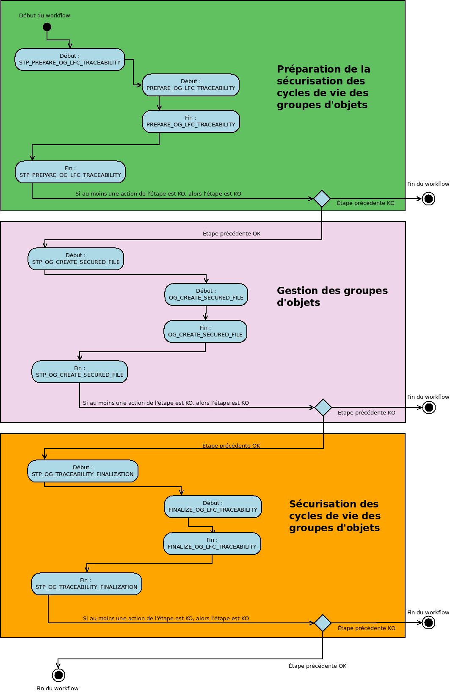
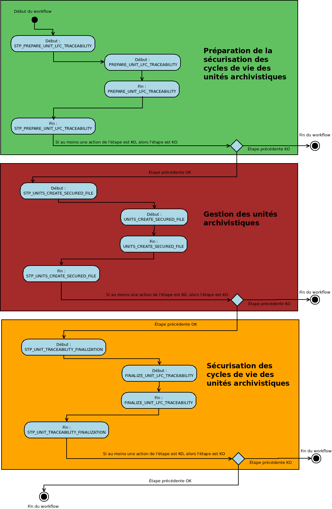

Workflow de création de journal des cycles de vie sécurisé des groupes d’objets¶
Introduction¶
Cette section décrit le processus (workflow) permettant la sécurisation des journaux du cycle de vie des groupes d’objets mis en place dans la solution logicielle Vitam. Le workflow mis en place dans la solution logicielle Vitam est défini dans le fichier « DefaultObjectGroupLifecycleTraceability.json ». Ce fichier est disponible dans : sources/processing/processing-management/src/main/resources/workflows.
Note
Le traitement permettant la sécurisation des journaux du cycle de vie procède par des tranches de lots de 100K. La solution Vitam à la fin de ce premier lot enclenche un autre traitement de 100K et ce jusqu’à avoir traités l’ensemble des groupes d’objets.
Processus de sécurisation des journaux des cycles de vie des groupes d’objets (vision métier)¶
Le processus de sécurisation des journaux des cycles de vie consiste en la création d’un fichier .zip contenant l’ensemble des journaux du cycle de vie à sécuriser, ainsi que le tampon d’horodatage.
Ce fichier zip est ensuite enregistré sur les offres de stockage, en fonction de la stratégie de stockage.
Sécurisation des journaux du cycle de vie LOGBOOK_OBJECTGROUP_LFC_TRACEABILITY (LogbookLFCAdministration.java)¶
Règle : sécurisation des journaux des cycles de vie des groupes d’objets
Type : bloquant
Statuts :
- OK : les journaux du cycle de vie ont été sécurisés (LOGBOOK_OBJECTGROUP_LFC_TRACEABILITY.OK = Succès de la sécurisation des journaux du cycle de vie des groupes d’objets)
- WARNING : il n’y pas de nouveaux journaux à sécuriser depuis la dernière sécurisation (LOGBOOK_OBJECTGROUP_LFC_TRACEABILITY.WARNING = Avertissement lors de la sécurisation des journaux du cycle de vie des groupes d’objets)
- KO : pas de cas KO
- FATAL : une erreur technique est survenue lors de la sécurisation du journal des opérations (LOGBOOK_OBJECTGROUP_LFC_TRACEABILITY.FATAL = Erreur technique lors de la sécurisation des journaux du cycle de vie des groupes d’objets)
Préparation des listes des cycles de vie¶
Étape 1 - STP_PREPARE_OG_LFC_TRACEABILITY - distribution sur REF¶
Liste cycles de vie à sécuriser - PREPARE_OG_LFC_TRACEABILITY - fichier out : GUID/Operations/lastOperation.json & Operations/traceabilityInformation.json
- Règle : récupération des journaux des cycles de vie à sécuriser et récupération des informations concernant les dernières opérations de sécurisation.
- Type : bloquant
- Statuts :
- OK : les fichiers des journaux des cycles de vie ont été exportés (dans ObjectGroup) ainsi que les informations concernant les dernières opérations de sécurisation (PREPARE_OG_LFC_TRACEABILITY.OK = Succès de la préparation de la liste des journaux du cycle de vie des groupes d’objets)
- KO : les informations sur la dernière opération de sécurisation n’ont pas pu être obtenues / exportées, ou un problème a été rencontré avec un journal de cycle de vie (PREPARE_OG_LFC_TRACEABILITY.KO = Échec de la préparation de la liste des journaux du cycle de vie des groupes d’objets)
- FATAL : une erreur technique est survenue (PREPARE_LC_TRACEABILITY.FATAL=Erreur technique lors de la préparation de la liste des journaux du cycle de vie des groupes d’objets)
Étape 2 - STP_OG_CREATE_SECURED_FILE - distribution sur LIST - fichiers présents dans ObjectGroup¶
Traitement des journaux du cycle de vie des groupes d’objets - OG_CREATE_SECURED_FILE
- Règle : application de l’algorithme pour créer les fichiers sécurisés des journaux du cycle de vie des groupes d’objets, journal par journal, et génèration du fichier sécurisé.
- Type : bloquant
- Statuts :
- OK : le fichier sécurisé pour le journal du cycle de vie en cours a été généré (STP_OG_CREATE_SECURED_FILE.OK = Succès du processus de sécurisation des groupes d’objets)
- WARNING : il n’y a pas de nouveaux journaux à sécuriser (STP_OG_CREATE_SECURED_FILE.WARNING = Avertissement lors du du processus de sécurisation des groupes d’objets)
- KO : le fichier pour le groupe d’objet n’a pas pu être trouvé (STP_OG_CREATE_SECURED_FILE.KO = Échec du processus de sécurisation des groupes d’objets)
- FATAL : une erreur technique est survenue lors de la génération des fichiers sécurisés (STP_OG_CREATE_SECURED_FILE.FATAL = Erreur technique lors du processus de sécurisation des groupes d’objets)
Vérification de la liste des éléments à traiter (OBJECTS_LIST_EMPTY)
- Règle : vérification de la présence ou non d’objets à traiter. Cette action ne s’inscrit dans le journal des opérations uniquement dans les cas fatal et warning.
- Type : non applicable
- Statuts :
- WARNING : il n’y a pas de nouveaux objets (OBJECTS_LIST_EMPTY.WARNING = Avertissement lors de l’établissement de la liste des objets : il n’y a pas d’objet pour cette étape)
- FATAL : une erreur technique est survenue lors de la génération des fichiers sécurisés (OBJECTS_LIST_EMPTY.FATAL = Erreur technique lors de l’établissement de la liste des objets)
Étape 3 - STP_OG_TRACEABILITY_FINALIZATION - distribution sur REF¶
Finalisation de la sécurisation - FINALIZE_OG_LFC_TRACEABILITY - fichier présent dans : GUID/Operations/lastOperation.json & Operations/traceabilityInformation.json
- Règle : récupération des différents fichiers générés aux étapes 1 et 2 puis calcul du tampon d’horodatage
- Type : non applicable
- Statuts :
- OK : la sécurisation des journaux du cycle de vie des groupes d’objets a bien été effectué (FINALIZE_OG_LFC_TRACEABILITY.OK = Succès de la sécurisation des journaux du cycle de vie des groupes d’objets)
- KO : la sécurisation des journaux du cycle de vie des groupes d’objets n’a pas été effectué (FINALIZE_OG_LFC_TRACEABILITY.KO = Échec de la sécurisation des journaux du cycle de vie des groupes d’objets)
- FATAL : une erreur technique est survenue lors de la la sécurisation des journaux du cycle de vie des groupes d’objets (FINALIZE_OG_LFC_TRACEABILITY.FATAL = Erreur technique lors de la sécurisation des journaux du cycle de vie des groupes d’objets)
Structure du workflow du processus de sécurisation des journaux des cycles de vie des groupes d’objets¶

Workflow de création de journal des cycles de vie sécurisé des unités archivistiques¶
Introduction¶
Cette section décrit le processus (workflow) permettant la sécurisation des journaux du cycle de vie mis en place dans la solution logicielle Vitam des unités archivistiques. Le workflow mis en place dans la solution logicielle Vitam est défini dans le fichier « DefaultUnitLifecycleTraceability.json ». Ce fichier est disponible dans : sources/processing/processing-management/src/main/resources/workflows.
Note
Le traitement permettant la sécurisation des journaux du cycle de vie procède par des tranches de lots de 100K. La solution Vitam à la fin de ce premier lot enclenche un autre traitement de 100K et ce jusqu’à avoir traités l’ensemble des unités archivistiques.
Processus de sécurisation des journaux des cycles de vie des unités archivistiques (vision métier)¶
Le processus de sécurisation des journaux des cycles de vie consiste en la création d’un fichier .zip contenant l’ensemble des journaux du cycle de vie à sécuriser, ainsi que le tampon d’horodatage.
Ce fichier zip est ensuite enregistré sur les offres de stockage, en fonction de la stratégie de stockage.
Sécurisation des journaux du cycle de vie des unités archivistiques LOGBOOK_UNIT_LFC_TRACEABILITY (LogbookLFCAdministration.java)¶
La fin du processus peut prendre plusieurs statuts :
Statuts :
- OK : les journaux du cycle de vie ont été sécurisés (LOGBOOK_UNIT_LFC_TRACEABILITY.OK = Succès de la sécurisation des journaux du cycle de vie des unités archivistiques)
- WARNING : il n’y pas de nouveaux journaux à sécuriser depuis la dernière sécurisation (LOGBOOK_UNIT_LFC_TRACEABILITY.WARNING = Avertissement lors de la sécurisation des journaux du cycle de vie des unités archivistiques)
- KO : pas de cas KO
- FATAL : une erreur technique est survenue lors de la sécurisation du journal des opérations (LOGBOOK_UNIT_LFC_TRACEABILITY.FATAL = Erreur technique lors de la sécurisation des journaux du cycle de vie des unités archivistiques)
Préparation des listes des cycles de vie¶
Étape 1 - STP_PREPARE_UNIT_LFC_TRACEABILITY - distribution sur REF¶
Liste cycles de vie à sécuriser - PREPARE_UNIT_LFC_TRACEABILITY - fichier out : GUID/Operations/lastOperation.json & Operations/traceabilityInformation.json
- Règle : récupération des journaux des cycles de vie à sécuriser et récupération des informations concernant les dernières opérations de sécurisation.
- Type : bloquant
- Statuts :
- OK : les fichiers des cycles de vie ont été exportés (dans UnitsWithoutLevel et ObjectGroup) ainsi que les informations concernant les dernières opérations de sécurisation (PREPARE_UNIT_LFC_TRACEABILITY.OK = Succès du listage des journaux du cycle de vie)
- KO : les informations sur la dernière opération de sécurisation n’ont pas pu être obtenues / exportées, ou un problème a été rencontré avec un cycle de vie (PREPARE_UNIT_LFC_TRACEABILITY.KO = Échec du listage des journaux du cycle de vie)
- FATAL : une erreur technique est survenue (PREPARE_UNIT_LFC_TRACEABILITY.FATAL = Erreur technique lors du listage des journaux du cycle de vie)
Étape 3 - STP_UNITS_CREATE_SECURED_FILE - distribution sur LIST - fichiers présents dans GUID¶
- Traitement des journaux du cycle de vie pour les unités archivistiques - UNITS_CREATE_SECURED_FILE
- Type : bloquant
- Règle : application de l’algorithme pour créer les fichiers sécurisés des journaux du cycle de vie des unités archivistiques, journal par journal, et génèration du fichier sécurisé.
- Statuts :
- OK : le fichier sécurisé pour les journaux du cycle de vie en cours a été généré (UNITS_CREATE_SECURED_FILE.OK=Succès du processus de sécurisation des journaux du cycle de vie des unités archivistiques)
- WARNING : il n’y a pas de nouveaux journaux à sécuriser (STP_UNITS_CREATE_SECURED_FILE.WARNING = Avertissement lors du processus de sécurisation des unités archivistiques)
- KO : le fichier pour le groupe d’objet n’a pas pu être trouvé (UNITS_CREATE_SECURED_FILE.KO = Échec du processus de sécurisation des journaux du cycle de vie des unités archivistiques)
- FATAL : une erreur technique est survenue lors de la génération des fichiers sécurisés (UNITS_CREATE_SECURED_FILE.FATAL = Erreur technique lors du processus de sécurisation des journaux du cycle de vie des unités archivistiques)
- Vérification de la liste des éléments à traiter (OBJECTS_LIST_EMPTY)
Il s’agit du même contrôle que l’étape 2
Étape 4 - STP_UNIT_TRACEABILITY_FINALIZATION - distribution sur REF¶
- Finalisation de la sécurisation - FINALIZE_LC_TRACEABILITY - fichier présent dans : GUID/Operations/lastOperation.json & Operations/traceabilityInformation.json
- Type : bloquant
- Règle : récupération des différents fichiers générés aux étapes 2 et 3 puis calcul du tampon d’horodatage
- Statuts :
- OK : le fichier zip final a été créé et sauvegarder sur les offres de stockage (FINALIZE_UNIT_LFC_TRACEABILITY.OK = Succès de la sécurisation des journaux du cycle de vie des unités archivistiques)
- KO : le fichier zip n’a pas pu être généré ou sauvegardé sur les offres (FINALIZE_UNIT_LFC_TRACEABILITY.KO = Échec de la sécurisation des journaux du cycle de vie des unités archivistiques)
- FATAL : une erreur technique est survenue lors de la création du fichier zip final et de la sauvegarde sur les offres de stockage (FINALIZE_UNIT_LFC_TRACEABILITY.FATAL = Erreur technique lors de la sécurisation des journaux du cycle de vie des unités archivistiques)
D’une façon synthétique, le workflow est décrit de cette façon :
Diagramme d’activité du workflow de sécurisation des cycles de vie des unités archivistiques
